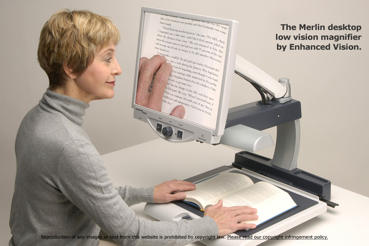

مرحباً بكم في مبصر

منصة تعليمية مخصصة لمجتمع ضعاف البصر، تهدف إلى تقديم معلومات واضحة وسهلة الوصول حول الإعاقات البصرية مع تطبيق أفضل ممارسات التصميم الشامل.
مهمتنا
نحن نسعى لتمكين الأفراد الذين يعانون من ضعف البصر من خلال توفير المعرفة والأدوات اللازمة للتنقل في العالم الرقمي والواقعي بثقة. هذا الموقع ليس مجرد مصدر للمعلومات، بل هو نموذج حي لمعايير الوصول العالية.
لماذا هذا التصميم؟
تم تصميم هذا الموقع بتباين عالٍ (نص أبيض على خلفية سوداء) لتقليل الوهج وتسهيل القراءة للأشخاص الذين يعانون من حساسية الضوء أو ضعف التباين. يمكنك استخدام زر "تبديل التباين" في الأعلى لتغيير المظهر حسب راحتك البصرية.